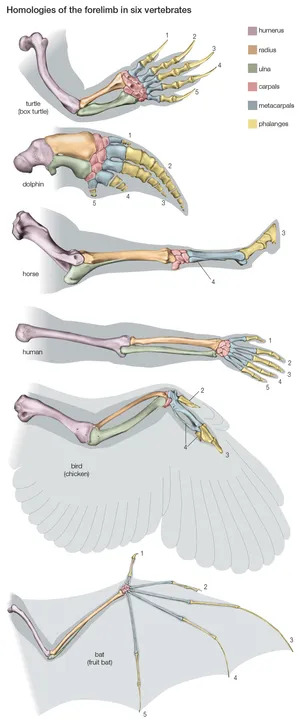
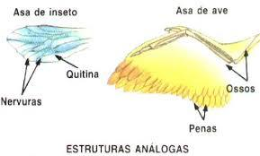
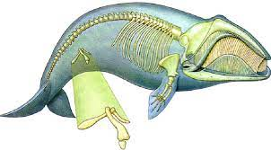

Entre as diversas linhas de evidências que sustentam a teoria evolutiva, as evidências morfológicas e fósseis se destacam como particularmente convincentes. Essas evidências são cruciais para a compreensão da história da vida na Terra, pois fornecem dados concretos e observáveis que permitem traçar as transformações das espécies ao longo das eras geológicas. Além disso, as evidências morfológicas e fósseis não apenas colaboram com a ideia de que a evolução é um processo lento e gradativo, mas também apresentam uma base empírica que torna a teoria do evolucionismo mais difícil de ser refutada. Diferentemente deconceitos mais abstratos, que podem ser mais difíceis de se verificar diretamente.

As evidências morfológicas são fundamentais para a compreensão da evolução das espécies, pois se baseiam nas características estruturais e funcionais dos organismos. Essas características podem ser observadas tanto em espécies atuais quanto em fósseis, e a comparação entre elas oferece descobertas valiosas sobre como as espécies evoluíram ao longo do tempo. Em essência, a morfologia estuda a forma e a estrutura dos organismos, e as evidências obtidas por essa abordagem ajudam a revelar padrões de evolução, adaptabilidade e ancestralidade comum. E geralmente estão divididas em odis tipos de estruturas homólogas e análogas.
ma das principais contribuições das evidências morfológicas para a teoria evolutiva é a identificação de estruturas homólogas. Essas são estruturas anatômicas que, embora desempenhem funções diferentes em organismos distintos, possuem uma origem evolutiva comum, evidênciada pela similaridade em sua estrutura básica. Um exemplo disso são os membros de vertebrados, como os braços humanos, as asas de morcegos e galinhas, as pernas de um cavalo e as nadadeiras de golfinhos e tartarugas. Apesar de suas funções variadas, essas estruturas possuem uma arquitetura óssea similar que pode ser observada na figura ao lado, o que indica que esses grupos de animais compartilham um ancestral comum. A comparação entre essas estruturas fornece uma base sólida para a compreensão de como a evolução pode dar origem a diferentes formas e funções a partir de uma estrutura básica comum.
Além das estruturas homólogas, outro conceito importante em morfologia é o das estruturas análogas. Essas são características que, embora desempenhem a mesma função em organismos diferentes, têm origens evolutivas independentes. Um exemplo disso pode ser visto nas asas de insetos e aves. Ambas as estruturas servem para o voo, mas têm origens evolutivas distintas, já que os insetos pertencem a um grupo completamente diferente dos vertebrados.
A presença de estruturas análogas pode ser explicada por convergência evolutiva, onde organismos de linhagens diferentes desenvolvem características semelhantes como resultado de adaptações a ambientes ou funções semelhantes, como mostrado na imagem abaixo.
Além disso, o estudo das estruturas vestigiais oferece outra evidência crucial para a teoria da evolução. Estruturas vestigiais são órgãos ou partes do corpo que, ao longo da evolução, perderam a função original que possuíam em espécies ancestrais, o que se pode ver em :baleias por exemplo. Um exemplo bem conhecido de estrutura vestigial são os ossos da pelve em cetáceos, como baleias e golfinhos por exemplo.
Esses animais, que passaram a viver em ambientes aquáticos, possuem vestígios de membros posteriores, que eram plenamente funcionais em seus ancestrais terrestres, mas se tornaram inúteis para a vida aquática. O fato de essas estruturas ainda estarem presentes nas espécies atuais sugere que as modificações evolutivas são um processo gradual,
em que os organismos mantêm vestígios do passado, mesmo que esses atributos tenham perdido sua função adaptativa.


Os fósseis desempenham um papel fundamental nas descobertas científicas relacionadas à teoria da evolução, funcionando como peças de um "quebra-cabeça" que nos ajudam a entender melhor o desenvolvimento de certas espécies, de forma similiar a qual foi descoberta a separação da Pangeia. O registro fóssil fornece um olhar para o passado da vida na Terra, mostrando como as espécies mudaram ao longo do tempo e como os organismos modernos estão relacionados com formas antigas. Ao longo da história, vários fósseis encontrados desempenharam papéis cruciais no fortalecimento da teoria evolucionista. Hoje em dia conhecemos literalmente milhares de fósseis que mostram a evolução entre os diversos grupos de organismos. Centenas de fósseis demonstram a origem dos mamíferos a partir de sinapsídeos mais primitivos, dos anfíbios a partir dos osteiíctios, a origem dos cetáceos a partir dos mesonquídeos, dos primatas a partir dos plesiadaptiformes, dos dinossauros a partir de répteis semelhantes a tecodontes, e da maioria dos principais grupos de vertebrados.
Um fóssil de transição é um tipo de fóssil que exibe características intermediárias entre dois grupos de organismos diferentes, geralmente entre uma espécie ancestral e seus descendentes evolutivamente mais avançados. Esses fósseis são de grande importância para a teoria da evolução, pois fornecem evidências diretas de como as espécies podem ter mudado ao longo do tempo, demonstrando o processo de transformação gradual que Darwin propôs.